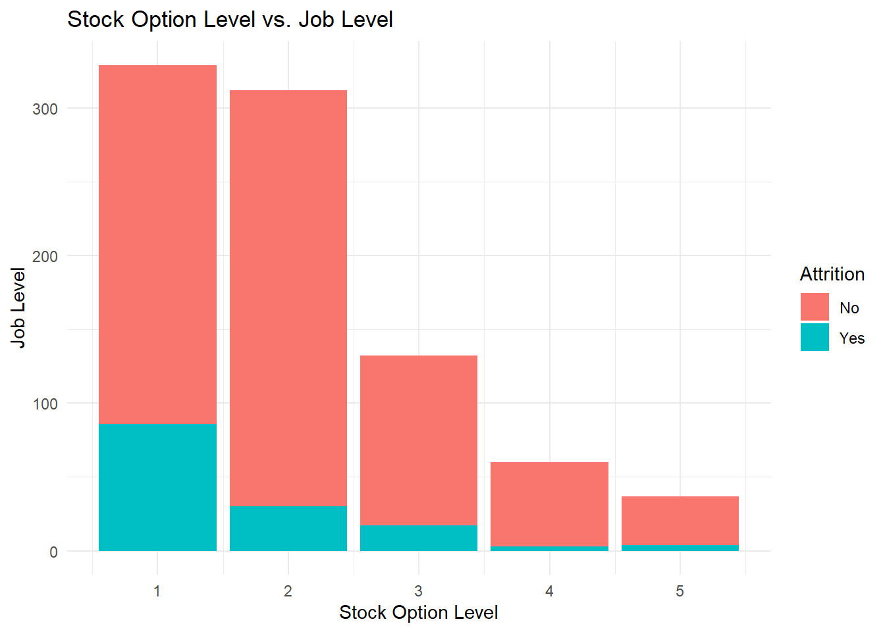
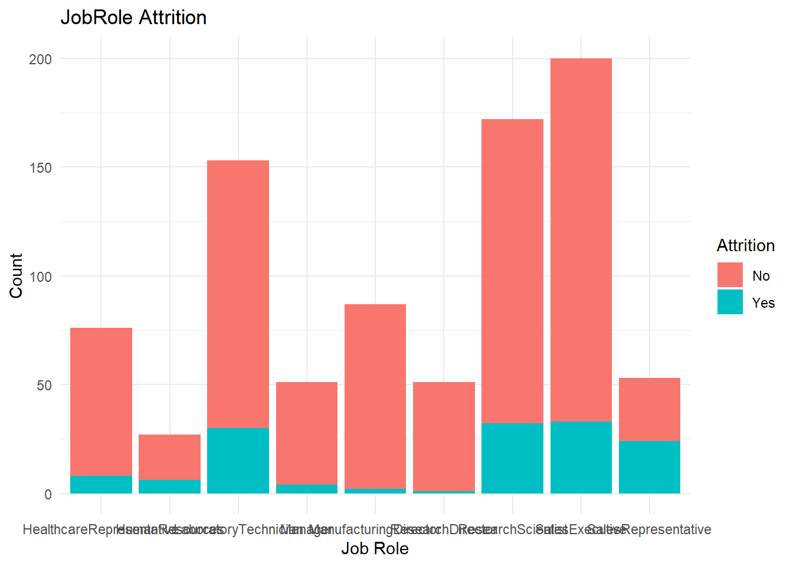

Libraries
library(tidyverse)
library(magrittr)
library(dplyr)
library(plotly)
library(class)
library(e1071)
library(psych)
library(randomForest)
library(caret)
library(fastDummies)
library(recipes)
library(GGally)
library(aod)Data Import/Transformation
# Source
case_study_df <- read.csv("C:/Users/corey/OneDrive/Documents/GitHub/DDS-Project-2/Data Sources/CaseStudy2-data.csv", header = TRUE) # nolint
str(case_study_df)## 'data.frame': 870 obs. of 36 variables:
## $ ID : int 1 2 3 4 5 6 7 8 9 10 ...
## $ Age : int 32 40 35 32 24 27 41 37 34 34 ...
## $ Attrition : chr "No" "No" "No" "No" ...
## $ BusinessTravel : chr "Travel_Rarely" "Travel_Rarely" "Travel_Frequently" "Travel_Rarely" ...
## $ DailyRate : int 117 1308 200 801 567 294 1283 309 1333 653 ...
## $ Department : chr "Sales" "Research & Development" "Research & Development" "Sales" ...
## $ DistanceFromHome : int 13 14 18 1 2 10 5 10 10 10 ...
## $ Education : int 4 3 2 4 1 2 5 4 4 4 ...
## $ EducationField : chr "Life Sciences" "Medical" "Life Sciences" "Marketing" ...
## $ EmployeeCount : int 1 1 1 1 1 1 1 1 1 1 ...
## $ EmployeeNumber : int 859 1128 1412 2016 1646 733 1448 1105 1055 1597 ...
## $ EnvironmentSatisfaction : int 2 3 3 3 1 4 2 4 3 4 ...
## $ Gender : chr "Male" "Male" "Male" "Female" ...
## $ HourlyRate : int 73 44 60 48 32 32 90 88 87 92 ...
## $ JobInvolvement : int 3 2 3 3 3 3 4 2 3 2 ...
## $ JobLevel : int 2 5 3 3 1 3 1 2 1 2 ...
## $ JobRole : chr "Sales Executive" "Research Director" "Manufacturing Director" "Sales Executive" ...
## $ JobSatisfaction : int 4 3 4 4 4 1 3 4 3 3 ...
## $ MaritalStatus : chr "Divorced" "Single" "Single" "Married" ...
## $ MonthlyIncome : int 4403 19626 9362 10422 3760 8793 2127 6694 2220 5063 ...
## $ MonthlyRate : int 9250 17544 19944 24032 17218 4809 5561 24223 18410 15332 ...
## $ NumCompaniesWorked : int 2 1 2 1 1 1 2 2 1 1 ...
## $ Over18 : chr "Y" "Y" "Y" "Y" ...
## $ OverTime : chr "No" "No" "No" "No" ...
## $ PercentSalaryHike : int 11 14 11 19 13 21 12 14 19 14 ...
## $ PerformanceRating : int 3 3 3 3 3 4 3 3 3 3 ...
## $ RelationshipSatisfaction: int 3 1 3 3 3 3 1 3 4 2 ...
## $ StandardHours : int 80 80 80 80 80 80 80 80 80 80 ...
## $ StockOptionLevel : int 1 0 0 2 0 2 0 3 1 1 ...
## $ TotalWorkingYears : int 8 21 10 14 6 9 7 8 1 8 ...
## $ TrainingTimesLastYear : int 3 2 2 3 2 4 5 5 2 3 ...
## $ WorkLifeBalance : int 2 4 3 3 3 2 2 3 3 2 ...
## $ YearsAtCompany : int 5 20 2 14 6 9 4 1 1 8 ...
## $ YearsInCurrentRole : int 2 7 2 10 3 7 2 0 1 2 ...
## $ YearsSinceLastPromotion : int 0 4 2 5 1 1 0 0 0 7 ...
## $ YearsWithCurrManager : int 3 9 2 7 3 7 3 0 0 7 ...# Seed
set.seed(100)
# Additional columns
## Mean Monthly Income by Job Role
job_role_income <-
case_study_df %>%
group_by(JobRole) %>%
summarise(mean_income_role = mean(MonthlyIncome))
## Mean Monthly Income by Job Level
job_level_income <-
case_study_df %>%
group_by(JobLevel) %>%
summarise(mean_income_level = mean(MonthlyIncome))
# Merge columns into main data frame
case_study_df <- left_join(case_study_df, job_role_income)## Joining, by = "JobRole"case_study_df <- left_join(case_study_df, job_level_income)## Joining, by = "JobLevel"# Create columns to calculate difference from mean and clean data
case_study_df <-
case_study_df %>%
mutate(income_dif_role = MonthlyIncome - mean_income_role,
income_dif_level = MonthlyIncome - mean_income_level,
JobRole = str_replace_all(JobRole, "[^[:alnum:]]", ""),
Department = str_replace_all(Department, "[^[:alnum:]]", ""),
EducationField = str_replace_all(EducationField, "[^[:alnum:]]", ""),
BusinessTravel = str_replace_all(BusinessTravel, "[^[:alnum:]]", "")
)
# Remove columns irrelevant to model or that have collinearity
case_df_trim <-
subset(case_study_df,
select = -c(
ID, Over18, EmployeeCount, EmployeeNumber,
StandardHours, mean_income_role, mean_income_level
)
)
# Producing dummy columns for categorical variables
dummy_df <-
dummy_cols(
case_df_trim,
c("Attrition", "BusinessTravel", "Department", "EducationField",
"Gender", "JobRole", "MaritalStatus", "OverTime"),
remove_selected_columns = TRUE
)
# Removing No Option from Attrition and Overtime for multicollinearity
dummy_df <-
subset(dummy_df,
select = -c(Attrition_No, OverTime_No)
)
# Creating data frame with dummy columns that keep original Attrition column
dummy_df_attrition <-
dummy_cols(
case_df_trim,
c("BusinessTravel", "Department", "EducationField",
"Gender", "JobRole", "MaritalStatus", "OverTime"),
remove_selected_columns = TRUE
)
dummy_df_attrition <-
subset(dummy_df_attrition,
select = -c(OverTime_No)
)EDA
# Attrition
## Logistical Regression best p-values
attrition_df <- dummy_df
## Obtaining P-Value for Attrition
log_reg <- glm(Attrition_Yes ~ ., data = attrition_df, family = "binomial")
anova(log_reg, test = "Chisq")## Analysis of Deviance Table
##
## Model: binomial, link: logit
##
## Response: Attrition_Yes
##
## Terms added sequentially (first to last)
##
##
## Df Deviance Resid. Df Resid. Dev Pr(>Chi)
## NULL 869 767.67
## Age 1 20.496 868 747.18 5.976e-06 ***
## DailyRate 1 0.855 867 746.32 0.3550930
## DistanceFromHome 1 6.666 866 739.66 0.0098266 **
## Education 1 0.254 865 739.40 0.6140611
## EnvironmentSatisfaction 1 5.334 864 734.07 0.0209160 *
## HourlyRate 1 1.518 863 732.55 0.2178581
## JobInvolvement 1 29.652 862 702.90 5.169e-08 ***
## JobLevel 1 13.267 861 689.63 0.0002701 ***
## JobSatisfaction 1 12.169 860 677.46 0.0004858 ***
## MonthlyIncome 1 0.000 859 677.46 0.9971451
## MonthlyRate 1 0.403 858 677.06 0.5256393
## NumCompaniesWorked 1 10.883 857 666.17 0.0009703 ***
## PercentSalaryHike 1 0.015 856 666.16 0.9025008
## PerformanceRating 1 0.001 855 666.16 0.9698064
## RelationshipSatisfaction 1 2.064 854 664.09 0.1507723
## StockOptionLevel 1 19.942 853 644.15 7.983e-06 ***
## TotalWorkingYears 1 5.248 852 638.90 0.0219776 *
## TrainingTimesLastYear 1 5.100 851 633.80 0.0239312 *
## WorkLifeBalance 1 5.258 850 628.55 0.0218427 *
## YearsAtCompany 1 0.456 849 628.09 0.4997180
## YearsInCurrentRole 1 5.494 848 622.60 0.0190825 *
## YearsSinceLastPromotion 1 17.785 847 604.81 2.474e-05 ***
## YearsWithCurrManager 1 4.033 846 600.78 0.0446093 *
## income_dif_role 1 7.175 845 593.60 0.0073933 **
## income_dif_level 1 6.850 844 586.75 0.0088619 **
## BusinessTravel_NonTravel 1 6.815 843 579.94 0.0090419 **
## BusinessTravel_TravelFrequently 1 5.562 842 574.38 0.0183523 *
## BusinessTravel_TravelRarely 0 0.000 842 574.38
## Department_HumanResources 1 0.085 841 574.29 0.7707070
## Department_ResearchDevelopment 1 17.133 840 557.16 3.485e-05 ***
## Department_Sales 0 0.000 840 557.16
## EducationField_HumanResources 1 1.326 839 555.83 0.2495790
## EducationField_LifeSciences 1 0.516 838 555.32 0.4724719
## EducationField_Marketing 1 0.014 837 555.30 0.9072382
## EducationField_Medical 1 0.751 836 554.55 0.3860137
## EducationField_Other 1 0.051 835 554.50 0.8209263
## EducationField_TechnicalDegree 0 0.000 835 554.50
## Gender_Female 1 0.382 834 554.12 0.5364352
## Gender_Male 0 0.000 834 554.12
## JobRole_HealthcareRepresentative 1 2.552 833 551.57 0.1101557
## JobRole_HumanResources 1 0.291 832 551.28 0.5898537
## JobRole_LaboratoryTechnician 1 1.890 831 549.39 0.1691816
## JobRole_Manager 1 1.502 830 547.88 0.2204291
## JobRole_ManufacturingDirector 1 1.449 829 546.44 0.2287647
## JobRole_ResearchDirector 1 0.091 828 546.34 0.7633826
## JobRole_ResearchScientist 1 1.137 827 545.21 0.2862304
## JobRole_SalesExecutive 0 0.000 827 545.21
## JobRole_SalesRepresentative 0 0.000 827 545.21
## MaritalStatus_Divorced 1 7.928 826 537.28 0.0048685 **
## MaritalStatus_Married 1 8.818 825 528.46 0.0029820 **
## MaritalStatus_Single 0 0.000 825 528.46
## OverTime_Yes 1 67.874 824 460.59 < 2.2e-16 ***
## ---
## Signif. codes: 0 '***' 0.001 '**' 0.01 '*' 0.05 '.' 0.1 ' ' 1## Data frame of P-Values
attr_pvalue_df <- rownames_to_column(as.data.frame(anova(log_reg, test = "Chisq")))[, c(1, 6)] #nolint
colnames(attr_pvalue_df) <- c("column_name", "p_value")
## P-Values less than .05
attr_pvalue_df %>%
filter(attr_pvalue_df$column_name != "(Intercept)" & .05 - p_value > 0) %>%
ggplot(aes(x = reorder(column_name, p_value), y = p_value)) +
geom_bar(stat = "identity", fill = "#00002c") +
ggtitle("Top Dependant Variable P-Values") +
xlab("Variable") +
ylab("P-Value") +
theme_minimal()
## Sorted list of significant P-Values
top_attr_pval <- attr_pvalue_df %>%
filter(attr_pvalue_df$column_name != "(Intercept)" & .05 - p_value > 0) %>%
arrange(p_value)
top_attr_pval## column_name p_value
## 1 OverTime_Yes 1.742932e-16
## 2 JobInvolvement 5.168935e-08
## 3 Age 5.975706e-06
## 4 StockOptionLevel 7.983208e-06
## 5 YearsSinceLastPromotion 2.473565e-05
## 6 Department_ResearchDevelopment 3.484748e-05
## 7 JobLevel 2.700889e-04
## 8 JobSatisfaction 4.858480e-04
## 9 NumCompaniesWorked 9.703351e-04
## 10 MaritalStatus_Married 2.981981e-03
## 11 MaritalStatus_Divorced 4.868451e-03
## 12 income_dif_role 7.393304e-03
## 13 income_dif_level 8.861907e-03
## 14 BusinessTravel_NonTravel 9.041888e-03
## 15 DistanceFromHome 9.826588e-03
## 16 BusinessTravel_TravelFrequently 1.835233e-02
## 17 YearsInCurrentRole 1.908253e-02
## 18 EnvironmentSatisfaction 2.091597e-02
## 19 WorkLifeBalance 2.184273e-02
## 20 TotalWorkingYears 2.197757e-02
## 21 TrainingTimesLastYear 2.393120e-02
## 22 YearsWithCurrManager 4.460925e-02# Individual Charts
## Sales Representatives, Age, OverTime, Stock Option Level, Marital Status
case_df_trim %>%
select(Attrition, OverTime, Age, MaritalStatus) %>%
ggpairs(aes(fill = Attrition))##
plot: [1,1] [=====>--------------------------------------------------------------------------------------------] 6% est: 0s
plot: [1,2] [===========>--------------------------------------------------------------------------------------] 12% est: 0s
plot: [1,3] [=================>--------------------------------------------------------------------------------] 19% est: 0s
plot: [1,4] [=======================>--------------------------------------------------------------------------] 25% est: 1s
plot: [2,1] [==============================>-------------------------------------------------------------------] 31% est: 0s
plot: [2,2] [====================================>-------------------------------------------------------------] 38% est: 0s
plot: [2,3] [==========================================>-------------------------------------------------------] 44% est: 0s
plot: [2,4] [================================================>-------------------------------------------------] 50% est: 0s
plot: [3,1] [======================================================>-------------------------------------------] 56% est: 0s `stat_bin()` using `bins = 30`. Pick better value with `binwidth`.
##
plot: [3,2] [============================================================>-------------------------------------] 62% est: 0s `stat_bin()` using `bins = 30`. Pick better value with `binwidth`.
##
plot: [3,3] [==================================================================>-------------------------------] 69% est: 0s
plot: [3,4] [=========================================================================>------------------------] 75% est: 0s
plot: [4,1] [===============================================================================>------------------] 81% est: 0s
plot: [4,2] [=====================================================================================>------------] 88% est: 0s
plot: [4,3] [===========================================================================================>------] 94% est: 0s `stat_bin()` using `bins = 30`. Pick better value with `binwidth`.
##
plot: [4,4] [==================================================================================================]100% est: 0s
# Attrition Rate
case_df_trim %>%
group_by(Attrition) %>%
summarise(count = n()) %>%
pivot_wider(names_from = Attrition, values_from = count) %>%
mutate(attr_rate = round(Yes / (No + Yes), 2)) %>%
arrange(desc(attr_rate))## # A tibble: 1 x 3
## No Yes attr_rate
## <int> <int> <dbl>
## 1 730 140 0.16## Overtime
case_df_trim %>%
group_by(OverTime, Attrition) %>%
summarise(count = n()) %>%
pivot_wider(names_from = Attrition, values_from = count) %>%
mutate(attr_rate = round(Yes / (No + Yes), 2)) %>%
arrange(desc(attr_rate))## `summarise()` has grouped output by 'OverTime'. You can override using the `.groups` argument.## # A tibble: 2 x 4
## # Groups: OverTime [2]
## OverTime No Yes attr_rate
## <chr> <int> <int> <dbl>
## 1 Yes 172 80 0.32
## 2 No 558 60 0.1case_df_trim %>%
ggplot(aes(x = OverTime, fill = Attrition)) +
geom_bar() +
ggtitle("Attrition by Overtime") +
xlab("Overtime") +
ylab("Count") +
theme_minimal()
case_df_trim %>%
ggplot(aes(x = Age, fill = Attrition)) +
geom_histogram() +
facet_wrap(~OverTime, ncol = 1) +
ggtitle("Age Attrition by Overtime Histogram") +
xlab("Age") +
ylab("Count") +
theme_minimal()## `stat_bin()` using `bins = 30`. Pick better value with `binwidth`.## Single and Overtime
case_df_trim %>%
group_by(OverTime, , MaritalStatus, Attrition) %>%
summarise(count = n()) %>%
pivot_wider(names_from = Attrition, values_from = count) %>%
mutate(attr_rate = round(Yes / (No + Yes), 2)) %>%
arrange(desc(attr_rate))## `summarise()` has grouped output by 'OverTime', 'MaritalStatus'. You can override using the `.groups` argument.## # A tibble: 6 x 5
## # Groups: OverTime, MaritalStatus [6]
## OverTime MaritalStatus No Yes attr_rate
## <chr> <chr> <int> <int> <dbl>
## 1 Yes Single 39 44 0.53
## 2 Yes Married 80 30 0.27
## 3 No Single 160 26 0.14
## 4 Yes Divorced 53 6 0.1
## 5 No Married 272 28 0.09
## 6 No Divorced 126 6 0.05## Job Involvement
case_df_trim %>%
group_by(JobInvolvement, Attrition) %>%
summarise(count = n()) %>%
pivot_wider(names_from = Attrition, values_from = count) %>%
mutate(attr_rate = round(Yes / (No + Yes), 2)) %>%
arrange(desc(attr_rate))## `summarise()` has grouped output by 'JobInvolvement'. You can override using the `.groups` argument.## # A tibble: 4 x 4
## # Groups: JobInvolvement [4]
## JobInvolvement No Yes attr_rate
## <int> <int> <int> <dbl>
## 1 1 25 22 0.47
## 2 2 184 44 0.19
## 3 3 447 67 0.13
## 4 4 74 7 0.09case_df_trim %>%
ggplot(aes(x = JobInvolvement, fill = Attrition)) +
geom_bar() +
ggtitle("Attrition by Job Involvement") +
xlab("Job Involvement") +
ylab("Count") +
theme_minimal()## Stock Option Level
case_df_trim %>%
group_by(StockOptionLevel, Attrition) %>%
summarise(count = n()) %>%
pivot_wider(names_from = Attrition, values_from = count) %>%
mutate(attr_rate = round(Yes / (No + Yes), 2)) %>%
arrange(desc(attr_rate))## `summarise()` has grouped output by 'StockOptionLevel'. You can override using the `.groups` argument.## # A tibble: 4 x 4
## # Groups: StockOptionLevel [4]
## StockOptionLevel No Yes attr_rate
## <int> <int> <int> <dbl>
## 1 0 281 98 0.26
## 2 3 43 12 0.22
## 3 1 328 27 0.08
## 4 2 78 3 0.04case_df_trim %>%
ggplot(aes(x = StockOptionLevel, y = JobLevel, fill = Attrition)) +
geom_smooth() +
geom_point() +
ggtitle("Stock Option Level vs. Job Level") +
xlab("Stock Option Level") +
ylab("Job Level") +
theme_minimal()## `geom_smooth()` using method = 'loess' and formula 'y ~ x'## Warning in simpleLoess(y, x, w, span, degree = degree, parametric = parametric, : pseudoinverse used at -0.015## Warning in simpleLoess(y, x, w, span, degree = degree, parametric = parametric, : neighborhood radius 1.015## Warning in simpleLoess(y, x, w, span, degree = degree, parametric = parametric, : reciprocal condition number 0## Warning in simpleLoess(y, x, w, span, degree = degree, parametric = parametric, : There are other near singularities as well. 1## Warning in predLoess(object$y, object$x, newx = if (is.null(newdata)) object$x else if (is.data.frame(newdata))
## as.matrix(model.frame(delete.response(terms(object)), : pseudoinverse used at -0.015## Warning in predLoess(object$y, object$x, newx = if (is.null(newdata)) object$x else if (is.data.frame(newdata))
## as.matrix(model.frame(delete.response(terms(object)), : neighborhood radius 1.015## Warning in predLoess(object$y, object$x, newx = if (is.null(newdata)) object$x else if (is.data.frame(newdata))
## as.matrix(model.frame(delete.response(terms(object)), : reciprocal condition number 0## Warning in predLoess(object$y, object$x, newx = if (is.null(newdata)) object$x else if (is.data.frame(newdata))
## as.matrix(model.frame(delete.response(terms(object)), : There are other near singularities as well. 1## Warning in simpleLoess(y, x, w, span, degree = degree, parametric = parametric, : pseudoinverse used at -0.015## Warning in simpleLoess(y, x, w, span, degree = degree, parametric = parametric, : neighborhood radius 1.015## Warning in simpleLoess(y, x, w, span, degree = degree, parametric = parametric, : reciprocal condition number 0## Warning in simpleLoess(y, x, w, span, degree = degree, parametric = parametric, : There are other near singularities as well. 1## Warning in predLoess(object$y, object$x, newx = if (is.null(newdata)) object$x else if (is.data.frame(newdata))
## as.matrix(model.frame(delete.response(terms(object)), : pseudoinverse used at -0.015## Warning in predLoess(object$y, object$x, newx = if (is.null(newdata)) object$x else if (is.data.frame(newdata))
## as.matrix(model.frame(delete.response(terms(object)), : neighborhood radius 1.015## Warning in predLoess(object$y, object$x, newx = if (is.null(newdata)) object$x else if (is.data.frame(newdata))
## as.matrix(model.frame(delete.response(terms(object)), : reciprocal condition number 0## Warning in predLoess(object$y, object$x, newx = if (is.null(newdata)) object$x else if (is.data.frame(newdata))
## as.matrix(model.frame(delete.response(terms(object)), : There are other near singularities as well. 1case_df_trim %>%
ggplot(aes(x = JobLevel, fill = Attrition)) +
geom_bar() +
ggtitle("Stock Option Level vs. Job Level") +
xlab("Stock Option Level") +
ylab("Job Level") +
theme_minimal()
table(case_df_trim$StockOptionLevel, case_df_trim$JobLevel)##
## 1 2 3 4 5
## 0 157 133 51 23 15
## 1 127 121 59 29 19
## 2 18 43 13 5 2
## 3 27 15 9 3 1## Job Role
case_df_trim %>%
ggplot(aes(x = JobRole, fill = Attrition)) +
geom_bar() +
ggtitle("JobRole Attrition") +
xlab("Job Role") +
ylab("Count") +
theme_minimal()
case_df_trim %>%
group_by(JobRole, Attrition) %>%
summarise(count = n()) %>%
pivot_wider(names_from = Attrition, values_from = count) %>%
mutate(attr_rate = round(Yes / (No + Yes), 2)) %>%
arrange(desc(attr_rate))## `summarise()` has grouped output by 'JobRole'. You can override using the `.groups` argument.## # A tibble: 9 x 4
## # Groups: JobRole [9]
## JobRole No Yes attr_rate
## <chr> <int> <int> <dbl>
## 1 SalesRepresentative 29 24 0.45
## 2 HumanResources 21 6 0.22
## 3 LaboratoryTechnician 123 30 0.2
## 4 ResearchScientist 140 32 0.19
## 5 SalesExecutive 167 33 0.16
## 6 HealthcareRepresentative 68 8 0.11
## 7 Manager 47 4 0.08
## 8 ManufacturingDirector 85 2 0.02
## 9 ResearchDirector 50 1 0.02## Age Attrition
case_df_trim %>%
ggplot(aes(y = Age, x = Attrition, fill = Attrition)) +
geom_boxplot() +
ggtitle("Age Attrition") +
xlab("Attrition") +
ylab("Age") +
theme_minimal()case_df_trim %>%
mutate(age_group =
case_when(
Age < 25 ~ "<25",
Age >= 25 & Age < 30 ~ "25-29",
Age >= 30 & Age < 35 ~ "30-34",
Age >= 35 & Age < 40 ~ "35-39",
Age >= 40 & Age < 45 ~ "40-44",
Age >= 45 & Age < 50 ~ "45-49",
Age >= 50 ~ ">50"
),
age_group =
factor(age_group,
level = c(
"<25",
"25-29",
"30-34",
"35-39",
"40-44",
"45-49",
">50"
)
)
) %>%
group_by(age_group, Attrition) %>%
summarise(count = n()) %>%
pivot_wider(names_from = Attrition, values_from = count) %>%
mutate(attr_rate = round(Yes / (No + Yes), 2)) %>%
arrange(desc(attr_rate))## `summarise()` has grouped output by 'age_group'. You can override using the `.groups` argument.## # A tibble: 7 x 4
## # Groups: age_group [7]
## age_group No Yes attr_rate
## <fct> <int> <int> <dbl>
## 1 <25 35 20 0.36
## 2 25-29 98 32 0.25
## 3 30-34 171 35 0.17
## 4 >50 76 13 0.15
## 5 35-39 156 19 0.11
## 6 40-44 109 12 0.1
## 7 45-49 85 9 0.1## Sales Representatives by Age
case_df_trim %>%
filter(JobRole == "SalesRepresentative") %>%
ggplot(aes(y = Age, fill = Attrition)) +
geom_boxplot() +
ggtitle("Sales Representatives Age Range") +
xlab("Attrition") +
ylab("Age") +
theme_minimal()case_df_trim %>%
filter(JobRole == "SalesRepresentative") %>%
ggplot(aes(y = MonthlyIncome, fill = Attrition)) +
geom_boxplot() +
ggtitle("Sales Representatives Age Range") +
xlab("Attrition") +
ylab("Monthly Income") +
theme_minimal()## Years since last promotion
case_df_trim %>%
ggplot(aes(x = YearsSinceLastPromotion, fill = Attrition)) +
geom_histogram() +
ggtitle("Years Since Last Promotion Distribution") +
xlab("Years Since Last Promotion") +
ylab("Count") +
theme_minimal()## `stat_bin()` using `bins = 30`. Pick better value with `binwidth`.case_df_trim %>%
mutate(promotion_group =
case_when(
YearsSinceLastPromotion < 1 ~ "<1",
YearsSinceLastPromotion >= 1 & YearsSinceLastPromotion < 5 ~ "1-4",
YearsSinceLastPromotion >= 5 & YearsSinceLastPromotion < 10 ~ "5-9",
YearsSinceLastPromotion >= 10 &
YearsSinceLastPromotion < 15 ~ "10-14",
YearsSinceLastPromotion >= 15 ~ ">15"
),
promotion_group =
factor(promotion_group,
level = c(
"<1",
"1-4",
"5-9",
"10-14",
">15"
)
)
) %>%
group_by(promotion_group, Attrition) %>%
summarise(count = n()) %>%
pivot_wider(names_from = Attrition, values_from = count) %>%
mutate(attr_rate = round(Yes / (No + Yes), 2))## `summarise()` has grouped output by 'promotion_group'. You can override using the `.groups` argument.## # A tibble: 5 x 4
## # Groups: promotion_group [5]
## promotion_group No Yes attr_rate
## <fct> <int> <int> <dbl>
## 1 <1 279 63 0.18
## 2 1-4 319 53 0.14
## 3 5-9 98 17 0.15
## 4 10-14 29 4 0.12
## 5 >15 5 3 0.38## Marital Status
case_df_trim %>%
ggplot(aes(x = MaritalStatus, fill = Attrition)) +
geom_bar() +
ggtitle("Attrition by Marital Status") +
xlab("Marital Status") +
ylab("Count") +
theme_minimal()case_df_trim %>%
group_by(MaritalStatus, Attrition) %>%
summarise(count = n()) %>%
pivot_wider(names_from = Attrition, values_from = count) %>%
mutate(attr_rate = round(Yes / (No + Yes), 2)) %>%
arrange(desc(attr_rate))## `summarise()` has grouped output by 'MaritalStatus'. You can override using the `.groups` argument.## # A tibble: 3 x 4
## # Groups: MaritalStatus [3]
## MaritalStatus No Yes attr_rate
## <chr> <int> <int> <dbl>
## 1 Single 199 70 0.26
## 2 Married 352 58 0.14
## 3 Divorced 179 12 0.06case_df_trim %>%
ggplot(aes(x = MaritalStatus, y = Age, fill = OverTime)) +
geom_boxplot() +
ggtitle("Attrition by Marital Status") +
xlab("Marital Status") +
ylab("Count") +
theme_minimal()case_df_trim %>%
ggplot(aes(x = JobRole, y = MaritalStatus, fill = MaritalStatus)) +
geom_bar(stat = "identity") +
ggtitle("Attrition by Marital Status and Job Role") +
xlab("Job Role") +
ylab("Count") +
theme_minimal()# Monthly Income
## Linear Regression
### Remove columns with collinearity to Monthly Income
income_df <-
subset(dummy_df,
select = -c(income_dif_role, income_dif_level)
)
income_lm_model <- lm(MonthlyIncome ~ ., income_df)
pvalue_df <- rownames_to_column(as.data.frame(summary(income_lm_model)$coefficients[, 4])) #nolint
colnames(pvalue_df) <- c("column_name", "p_value")
### Top Dependant Variables p-values
pvalue_df %>%
filter(pvalue_df$column_name != "(Intercept)" & .05 - p_value > 0) %>%
ggplot(aes(x = reorder(column_name, p_value), y = p_value)) +
geom_bar(stat = "identity", fill = "#00002c") +
ggtitle("Top Dependant Variable P-Values") +
xlab("Variable") +
ylab("P-Value") +
theme_minimal()top_income_pval <- pvalue_df %>%
filter(pvalue_df$column_name != "(Intercept)" & .05 - p_value > 0) %>%
arrange(p_value)
top_income_pval## column_name p_value
## 1 JobLevel 3.989508e-155
## 2 JobRole_Manager 1.523787e-29
## 3 JobRole_ResearchDirector 6.878372e-19
## 4 TotalWorkingYears 3.660867e-06
## 5 BusinessTravel_NonTravel 1.734943e-03
## 6 JobRole_SalesExecutive 2.358397e-02
## 7 PerformanceRating 4.493600e-02
## 8 YearsSinceLastPromotion 4.723235e-02best_pvalue_df <-
pvalue_df %>%
filter(pvalue_df$column_name != "(Intercept)" & .05 - p_value > 0) %>%
select(column_name)
# Individual charts
case_df_trim %>%
select(MonthlyIncome, Attrition, JobLevel, JobRole, BusinessTravel) %>%
ggpairs(aes(fill = Attrition))##
plot: [1,1] [===>----------------------------------------------------------------------------------------------] 4% est: 0s
plot: [1,2] [=======>------------------------------------------------------------------------------------------] 8% est: 1s
plot: [1,3] [===========>--------------------------------------------------------------------------------------] 12% est: 1s
plot: [1,4] [===============>----------------------------------------------------------------------------------] 16% est: 1s
plot: [1,5] [===================>------------------------------------------------------------------------------] 20% est: 1s
plot: [2,1] [=======================>--------------------------------------------------------------------------] 24% est: 1s `stat_bin()` using `bins = 30`. Pick better value with `binwidth`.
##
plot: [2,2] [==========================>-----------------------------------------------------------------------] 28% est: 1s
plot: [2,3] [==============================>-------------------------------------------------------------------] 32% est: 1s
plot: [2,4] [==================================>---------------------------------------------------------------] 36% est: 1s
plot: [2,5] [======================================>-----------------------------------------------------------] 40% est: 1s
plot: [3,1] [==========================================>-------------------------------------------------------] 44% est: 1s
plot: [3,2] [==============================================>---------------------------------------------------] 48% est: 1s `stat_bin()` using `bins = 30`. Pick better value with `binwidth`.
##
plot: [3,3] [==================================================>-----------------------------------------------] 52% est: 1s
plot: [3,4] [======================================================>-------------------------------------------] 56% est: 1s
plot: [3,5] [==========================================================>---------------------------------------] 60% est: 1s
plot: [4,1] [==============================================================>-----------------------------------] 64% est: 1s `stat_bin()` using `bins = 30`. Pick better value with `binwidth`.
##
plot: [4,2] [==================================================================>-------------------------------] 68% est: 1s
plot: [4,3] [======================================================================>---------------------------] 72% est: 1s `stat_bin()` using `bins = 30`. Pick better value with `binwidth`.
##
plot: [4,4] [=========================================================================>------------------------] 76% est: 1s
plot: [4,5] [=============================================================================>--------------------] 80% est: 1s
plot: [5,1] [=================================================================================>----------------] 84% est: 0s `stat_bin()` using `bins = 30`. Pick better value with `binwidth`.
##
plot: [5,2] [=====================================================================================>------------] 88% est: 0s
plot: [5,3] [=========================================================================================>--------] 92% est: 0s `stat_bin()` using `bins = 30`. Pick better value with `binwidth`.
##
plot: [5,4] [=============================================================================================>----] 96% est: 0s
plot: [5,5] [==================================================================================================]100% est: 0s
## Higher potential for earning when you travel some.
## Those who don't get paid well and have to travel leave.
## Job Role
case_df_trim %>%
ggplot(aes(x = JobRole, y = MonthlyIncome, fill = JobRole)) +
geom_boxplot() +
ggtitle("Job Role and Monthly Income") +
xlab("Job Role") +
ylab("Monthly Income") +
theme_minimal()case_df_trim %>%
ggplot(aes(x = JobRole, y = MonthlyIncome, fill = Attrition)) +
geom_boxplot() +
ggtitle("Attrition by Job Role and Monthly Income") +
xlab("Job Role") +
ylab("Monthly Income") +
theme_minimal()## Job Level
case_df_trim %>%
ggplot(aes(x = as.factor(JobLevel), y = MonthlyIncome, fill = JobLevel)) +
geom_boxplot() +
ggtitle("Job Level and Monthly Income") +
xlab("Job Level") +
ylab("Monthly Income") +
theme_minimal()## Business Travel
case_df_trim %>%
ggplot(aes(x = as.factor(BusinessTravel),
y = MonthlyIncome, fill = BusinessTravel)) +
geom_boxplot() +
ggtitle("Business Travel and Monthly Income") +
xlab("Business Travel") +
ylab("Monthly Income") +
theme_minimal()
## OverTime vs. Monthly Income
attr_pvalue_df %>%
filter(attr_pvalue_df$column_name != "(Intercept)") %>%
arrange(p_value)## column_name p_value
## 1 OverTime_Yes 1.742932e-16
## 2 JobInvolvement 5.168935e-08
## 3 Age 5.975706e-06
## 4 StockOptionLevel 7.983208e-06
## 5 YearsSinceLastPromotion 2.473565e-05
## 6 Department_ResearchDevelopment 3.484748e-05
## 7 JobLevel 2.700889e-04
## 8 JobSatisfaction 4.858480e-04
## 9 NumCompaniesWorked 9.703351e-04
## 10 MaritalStatus_Married 2.981981e-03
## 11 MaritalStatus_Divorced 4.868451e-03
## 12 income_dif_role 7.393304e-03
## 13 income_dif_level 8.861907e-03
## 14 BusinessTravel_NonTravel 9.041888e-03
## 15 DistanceFromHome 9.826588e-03
## 16 BusinessTravel_TravelFrequently 1.835233e-02
## 17 YearsInCurrentRole 1.908253e-02
## 18 EnvironmentSatisfaction 2.091597e-02
## 19 WorkLifeBalance 2.184273e-02
## 20 TotalWorkingYears 2.197757e-02
## 21 TrainingTimesLastYear 2.393120e-02
## 22 YearsWithCurrManager 4.460925e-02
## 23 JobRole_HealthcareRepresentative 1.101557e-01
## 24 RelationshipSatisfaction 1.507723e-01
## 25 JobRole_LaboratoryTechnician 1.691816e-01
## 26 HourlyRate 2.178581e-01
## 27 JobRole_Manager 2.204291e-01
## 28 JobRole_ManufacturingDirector 2.287647e-01
## 29 EducationField_HumanResources 2.495790e-01
## 30 JobRole_ResearchScientist 2.862304e-01
## 31 DailyRate 3.550930e-01
## 32 EducationField_Medical 3.860137e-01
## 33 EducationField_LifeSciences 4.724719e-01
## 34 YearsAtCompany 4.997180e-01
## 35 MonthlyRate 5.256393e-01
## 36 Gender_Female 5.364352e-01
## 37 JobRole_HumanResources 5.898537e-01
## 38 Education 6.140611e-01
## 39 JobRole_ResearchDirector 7.633826e-01
## 40 Department_HumanResources 7.707070e-01
## 41 EducationField_Other 8.209263e-01
## 42 PercentSalaryHike 9.025008e-01
## 43 EducationField_Marketing 9.072382e-01
## 44 PerformanceRating 9.698064e-01
## 45 MonthlyIncome 9.971451e-01
## 46 NULL NA
## 47 BusinessTravel_TravelRarely NA
## 48 Department_Sales NA
## 49 EducationField_TechnicalDegree NA
## 50 Gender_Male NA
## 51 JobRole_SalesExecutive NA
## 52 JobRole_SalesRepresentative NA
## 53 MaritalStatus_Single NApvalue_df %>%
filter(pvalue_df$column_name != "(Intercept)") %>%
arrange(p_value)## column_name p_value
## 1 JobLevel 3.989508e-155
## 2 JobRole_Manager 1.523787e-29
## 3 JobRole_ResearchDirector 6.878372e-19
## 4 TotalWorkingYears 3.660867e-06
## 5 BusinessTravel_NonTravel 1.734943e-03
## 6 JobRole_SalesExecutive 2.358397e-02
## 7 PerformanceRating 4.493600e-02
## 8 YearsSinceLastPromotion 4.723235e-02
## 9 BusinessTravel_TravelFrequently 6.157761e-02
## 10 JobRole_LaboratoryTechnician 6.661165e-02
## 11 MonthlyRate 7.293873e-02
## 12 Department_ResearchDevelopment 8.623588e-02
## 13 PercentSalaryHike 1.118716e-01
## 14 DailyRate 1.131166e-01
## 15 YearsWithCurrManager 1.234102e-01
## 16 Gender_Female 1.360632e-01
## 17 DistanceFromHome 1.429030e-01
## 18 JobRole_ResearchScientist 2.485023e-01
## 19 Department_HumanResources 3.588284e-01
## 20 Education 3.639767e-01
## 21 JobSatisfaction 4.128763e-01
## 22 TrainingTimesLastYear 4.157435e-01
## 23 Attrition_Yes 4.757328e-01
## 24 WorkLifeBalance 4.844083e-01
## 25 JobRole_HumanResources 5.796827e-01
## 26 MaritalStatus_Married 6.169284e-01
## 27 RelationshipSatisfaction 6.266518e-01
## 28 EducationField_Medical 6.448541e-01
## 29 YearsAtCompany 7.298971e-01
## 30 JobInvolvement 7.345031e-01
## 31 YearsInCurrentRole 7.411108e-01
## 32 EducationField_LifeSciences 7.473641e-01
## 33 NumCompaniesWorked 7.716430e-01
## 34 Age 8.004936e-01
## 35 JobRole_ManufacturingDirector 8.118130e-01
## 36 EducationField_HumanResources 8.247614e-01
## 37 HourlyRate 8.347791e-01
## 38 JobRole_HealthcareRepresentative 8.360516e-01
## 39 OverTime_Yes 8.557723e-01
## 40 EnvironmentSatisfaction 8.927133e-01
## 41 MaritalStatus_Divorced 9.107199e-01
## 42 EducationField_Marketing 9.171749e-01
## 43 StockOptionLevel 9.431565e-01
## 44 EducationField_Other 9.611111e-01## Overtime Monthly Income
case_df_trim %>%
ggplot(aes(x = OverTime,
y = MonthlyIncome, fill = OverTime)) +
geom_boxplot() +
ggtitle("Over Time and Monthly Income") +
xlab("Over Time") +
ylab("Monthly Income") +
theme_minimal()case_df_trim %>%
ggplot(aes(x = JobRole, fill = OverTime)) +
geom_bar() +
ggtitle("Over Time and Monthly Income") +
xlab("Over Time") +
ylab("Monthly Income") +
theme_minimal()Attrition Models
Linear Regression
# Create data frame with best variables
best_case_df_att <-
subset(dummy_df,
select = c(top_attr_pval$column_name, "Attrition_Yes"))
# Linear Regression Model Test
index_lr_att <-
sample(seq(1, dim(best_case_df_att)[1], 1), .7 * dim(best_case_df_att)[1])
train_lr_att <- best_case_df_att[index_lr_att, ]
test_lr_att <- best_case_df_att[-index_lr_att, ]
attr_lr <- lm(Attrition_Yes ~ ., train_lr_att)
p_linear_attr <- predict(attr_lr, test_lr_att, type = "response")
p_linear_attr <- ifelse(p_linear_attr > 0.5, 1, 0)
confusionMatrix(table(p_linear_attr, test_lr_att$Attrition_Yes))## Confusion Matrix and Statistics
##
##
## p_linear_attr 0 1
## 0 219 26
## 1 1 15
##
## Accuracy : 0.8966
## 95% CI : (0.8531, 0.9307)
## No Information Rate : 0.8429
## P-Value [Acc > NIR] : 0.008279
##
## Kappa : 0.4805
##
## Mcnemar's Test P-Value : 3.86e-06
##
## Sensitivity : 0.9955
## Specificity : 0.3659
## Pos Pred Value : 0.8939
## Neg Pred Value : 0.9375
## Prevalence : 0.8429
## Detection Rate : 0.8391
## Detection Prevalence : 0.9387
## Balanced Accuracy : 0.6807
##
## 'Positive' Class : 0
## Logistical Regression
# Logistical Regression Model Test
index_lr <- sample(seq(1, dim(attrition_df)[1], 1),
.7 * dim(attrition_df)[1])
train_lr <- attrition_df[index_lr, ]
test_lr <- attrition_df[-index_lr, ]
log_reg_att <- glm(Attrition_Yes ~ ., data = train_lr, family = "binomial")
anova(log_reg_att, test = "Chisq")## Analysis of Deviance Table
##
## Model: binomial, link: logit
##
## Response: Attrition_Yes
##
## Terms added sequentially (first to last)
##
##
## Df Deviance Resid. Df Resid. Dev Pr(>Chi)
## NULL 608 534.06
## Age 1 12.852 607 521.20 0.0003372 ***
## DailyRate 1 0.883 606 520.32 0.3474109
## DistanceFromHome 1 6.195 605 514.13 0.0128114 *
## Education 1 1.026 604 513.10 0.3111145
## EnvironmentSatisfaction 1 4.755 603 508.35 0.0292052 *
## HourlyRate 1 0.434 602 507.91 0.5100926
## JobInvolvement 1 23.452 601 484.46 1.281e-06 ***
## JobLevel 1 14.061 600 470.40 0.0001770 ***
## JobSatisfaction 1 8.831 599 461.57 0.0029618 **
## MonthlyIncome 1 0.073 598 461.50 0.7877159
## MonthlyRate 1 0.914 597 460.58 0.3390062
## NumCompaniesWorked 1 4.320 596 456.26 0.0376676 *
## PercentSalaryHike 1 0.154 595 456.11 0.6951346
## PerformanceRating 1 0.059 594 456.05 0.8087744
## RelationshipSatisfaction 1 3.664 593 452.39 0.0556155 .
## StockOptionLevel 1 13.252 592 439.13 0.0002723 ***
## TotalWorkingYears 1 2.869 591 436.26 0.0903171 .
## TrainingTimesLastYear 1 5.784 590 430.48 0.0161704 *
## WorkLifeBalance 1 1.777 589 428.70 0.1825703
## YearsAtCompany 1 0.078 588 428.63 0.7801846
## YearsInCurrentRole 1 0.099 587 428.53 0.7524570
## YearsSinceLastPromotion 1 15.367 586 413.16 8.854e-05 ***
## YearsWithCurrManager 1 1.177 585 411.98 0.2780357
## income_dif_role 1 8.058 584 403.93 0.0045302 **
## income_dif_level 1 5.505 583 398.42 0.0189629 *
## BusinessTravel_NonTravel 1 7.853 582 390.57 0.0050723 **
## BusinessTravel_TravelFrequently 1 4.266 581 386.30 0.0388792 *
## BusinessTravel_TravelRarely 0 0.000 581 386.30
## Department_HumanResources 1 0.616 580 385.68 0.4324820
## Department_ResearchDevelopment 1 13.200 579 372.49 0.0002800 ***
## Department_Sales 0 0.000 579 372.49
## EducationField_HumanResources 1 1.398 578 371.09 0.2370725
## EducationField_LifeSciences 1 0.019 577 371.07 0.8892403
## EducationField_Marketing 1 0.013 576 371.05 0.9094875
## EducationField_Medical 1 0.811 575 370.24 0.3678280
## EducationField_Other 1 0.317 574 369.93 0.5736319
## EducationField_TechnicalDegree 0 0.000 574 369.93
## Gender_Female 1 0.433 573 369.49 0.5104667
## Gender_Male 0 0.000 573 369.49
## JobRole_HealthcareRepresentative 1 4.383 572 365.11 0.0363039 *
## JobRole_HumanResources 1 0.084 571 365.03 0.7714485
## JobRole_LaboratoryTechnician 1 0.877 570 364.15 0.3491173
## JobRole_Manager 1 0.087 569 364.06 0.7683197
## JobRole_ManufacturingDirector 1 1.306 568 362.76 0.2532096
## JobRole_ResearchDirector 1 0.123 567 362.64 0.7259213
## JobRole_ResearchScientist 1 0.391 566 362.24 0.5316730
## JobRole_SalesExecutive 0 0.000 566 362.24
## JobRole_SalesRepresentative 0 0.000 566 362.24
## MaritalStatus_Divorced 1 7.730 565 354.51 0.0054296 **
## MaritalStatus_Married 1 17.542 564 336.97 2.810e-05 ***
## MaritalStatus_Single 0 0.000 564 336.97
## OverTime_Yes 1 46.462 563 290.51 9.341e-12 ***
## ---
## Signif. codes: 0 '***' 0.001 '**' 0.01 '*' 0.05 '.' 0.1 ' ' 1p_lr_attr <-
predict(log_reg_att,
newdata = test_lr,
type = "response"
)## Warning in predict.lm(object, newdata, se.fit, scale = 1, type = if (type == : prediction from a rank-deficient fit may be
## misleading# Converting probability to binomial response
p_lr_attr <- ifelse(p_lr_attr > 0.5, 1, 0)
confusionMatrix(table(p_lr_attr, test_lr$Attrition_Yes))## Confusion Matrix and Statistics
##
##
## p_lr_attr 0 1
## 0 203 24
## 1 15 19
##
## Accuracy : 0.8506
## 95% CI : (0.8014, 0.8915)
## No Information Rate : 0.8352
## P-Value [Acc > NIR] : 0.2838
##
## Kappa : 0.4073
##
## Mcnemar's Test P-Value : 0.2002
##
## Sensitivity : 0.9312
## Specificity : 0.4419
## Pos Pred Value : 0.8943
## Neg Pred Value : 0.5588
## Prevalence : 0.8352
## Detection Rate : 0.7778
## Detection Prevalence : 0.8697
## Balanced Accuracy : 0.6865
##
## 'Positive' Class : 0
## Random Forest
attrition_rf_df <- dummy_df_attrition
# Random Forest with all variables
case_rf <-
randomForest(
as.factor(Attrition) ~ .,
data = attrition_rf_df,
importance = TRUE,
proximity = TRUE,
ntree = 2000,
mtry = 2
)
case_rf##
## Call:
## randomForest(formula = as.factor(Attrition) ~ ., data = attrition_rf_df, importance = TRUE, proximity = TRUE, ntree = 2000, mtry = 2)
## Type of random forest: classification
## Number of trees: 2000
## No. of variables tried at each split: 2
##
## OOB estimate of error rate: 14.83%
## Confusion matrix:
## No Yes class.error
## No 730 0 0.0000000
## Yes 129 11 0.9214286varImpPlot(case_rf, main = "Variable Importance")# Remove variables hurting the model
case_study_trim <-
subset(attrition_rf_df,
select = c(Attrition, OverTime_Yes, MonthlyIncome, StockOptionLevel,
JobLevel, Age, JobInvolvement, MaritalStatus_Single,
MaritalStatus_Divorced, YearsAtCompany, JobRole_SalesRepresentative
)
)
str(case_study_trim)## 'data.frame': 870 obs. of 11 variables:
## $ Attrition : chr "No" "No" "No" "No" ...
## $ OverTime_Yes : int 0 0 0 0 1 0 1 1 1 0 ...
## $ MonthlyIncome : int 4403 19626 9362 10422 3760 8793 2127 6694 2220 5063 ...
## $ StockOptionLevel : int 1 0 0 2 0 2 0 3 1 1 ...
## $ JobLevel : int 2 5 3 3 1 3 1 2 1 2 ...
## $ Age : int 32 40 35 32 24 27 41 37 34 34 ...
## $ JobInvolvement : int 3 2 3 3 3 3 4 2 3 2 ...
## $ MaritalStatus_Single : int 0 1 1 0 1 0 0 0 0 0 ...
## $ MaritalStatus_Divorced : int 1 0 0 0 0 1 0 1 0 0 ...
## $ YearsAtCompany : int 5 20 2 14 6 9 4 1 1 8 ...
## $ JobRole_SalesRepresentative: int 0 0 0 0 0 0 0 0 1 0 ...# Random Forest model comparision to base
case_rf_trim <-
randomForest(
as.factor(Attrition) ~ .,
data = case_study_trim,
importance = TRUE,
proximity = TRUE,
ntree = 2000,
mtry = 2
)
case_rf_trim##
## Call:
## randomForest(formula = as.factor(Attrition) ~ ., data = case_study_trim, importance = TRUE, proximity = TRUE, ntree = 2000, mtry = 2)
## Type of random forest: classification
## Number of trees: 2000
## No. of variables tried at each split: 2
##
## OOB estimate of error rate: 14.02%
## Confusion matrix:
## No Yes class.error
## No 715 15 0.02054795
## Yes 107 33 0.76428571varImpPlot(case_rf_trim, main = "Variable Importance - Refined")# Create data frame for each class
no_df_trimed <- case_study_trim %>% filter(Attrition == "No")
yes_df_trimed <- case_study_trim %>% filter(Attrition == "Yes")
# Set index length based on class with the smallest data set
# This will undersample the larger class dataset to match the other class sample
no_len <- dim(no_df_trimed)[1]
yes_len <- dim(yes_df_trimed)[1]
index_len <- min(no_len, yes_len)
# Set index for both classes
no_index <- sample(seq(1, dim(no_df_trimed)[1], 1), .8 * index_len)
yes_index <- sample(seq(1, dim(yes_df_trimed)[1], 1), .8 * index_len)
# Create train and test for both classes
train_no <- no_df_trimed[no_index, ]
train_yes <- yes_df_trimed[yes_index, ]
test_no <- no_df_trimed[-no_index, ]
test_yes <- yes_df_trimed[-yes_index, ]
# Merge train and test class data frames back together
train_df <- rbind(train_no, train_yes)
test_df <- rbind(test_no, test_yes)
# For loop to find best number of variables to sample
iterations <- 200
num_mtry <- dim(case_study_trim)[2]
num_ntree <- 1000
master_acc <- matrix(nrow = iterations, ncol = num_mtry)
master_sens <- matrix(nrow = iterations, ncol = num_mtry)
master_spec <- matrix(nrow = iterations, ncol = num_mtry)
for (j in 1:iterations) {
for (i in 1:num_mtry) {
case_rf <-
randomForest(
as.factor(Attrition) ~ .,
data = train_df,
importance = TRUE,
proximity = TRUE,
ntree = num_ntree,
mtry = i
)
rf_p_for <- predict(case_rf, test_df)
cm_for <- confusionMatrix(rf_p_for, as.factor(test_df$Attrition))
master_acc[j, i] <- cm_for$overall["Accuracy"]
master_sens[j, i] <- cm_for$byClass["Sensitivity"]
master_spec[j, i] <- cm_for$byClass["Specificity"]
}
}## Warning in randomForest.default(m, y, ...): invalid mtry: reset to within valid range
## Warning in randomForest.default(m, y, ...): invalid mtry: reset to within valid range
## Warning in randomForest.default(m, y, ...): invalid mtry: reset to within valid range
## Warning in randomForest.default(m, y, ...): invalid mtry: reset to within valid range
## Warning in randomForest.default(m, y, ...): invalid mtry: reset to within valid range
## Warning in randomForest.default(m, y, ...): invalid mtry: reset to within valid range
## Warning in randomForest.default(m, y, ...): invalid mtry: reset to within valid range
## Warning in randomForest.default(m, y, ...): invalid mtry: reset to within valid range
## Warning in randomForest.default(m, y, ...): invalid mtry: reset to within valid range
## Warning in randomForest.default(m, y, ...): invalid mtry: reset to within valid range
## Warning in randomForest.default(m, y, ...): invalid mtry: reset to within valid range
## Warning in randomForest.default(m, y, ...): invalid mtry: reset to within valid range
## Warning in randomForest.default(m, y, ...): invalid mtry: reset to within valid range
## Warning in randomForest.default(m, y, ...): invalid mtry: reset to within valid range
## Warning in randomForest.default(m, y, ...): invalid mtry: reset to within valid range
## Warning in randomForest.default(m, y, ...): invalid mtry: reset to within valid range
## Warning in randomForest.default(m, y, ...): invalid mtry: reset to within valid range
## Warning in randomForest.default(m, y, ...): invalid mtry: reset to within valid range
## Warning in randomForest.default(m, y, ...): invalid mtry: reset to within valid range
## Warning in randomForest.default(m, y, ...): invalid mtry: reset to within valid range
## Warning in randomForest.default(m, y, ...): invalid mtry: reset to within valid range
## Warning in randomForest.default(m, y, ...): invalid mtry: reset to within valid range
## Warning in randomForest.default(m, y, ...): invalid mtry: reset to within valid range
## Warning in randomForest.default(m, y, ...): invalid mtry: reset to within valid range
## Warning in randomForest.default(m, y, ...): invalid mtry: reset to within valid range
## Warning in randomForest.default(m, y, ...): invalid mtry: reset to within valid range
## Warning in randomForest.default(m, y, ...): invalid mtry: reset to within valid range
## Warning in randomForest.default(m, y, ...): invalid mtry: reset to within valid range
## Warning in randomForest.default(m, y, ...): invalid mtry: reset to within valid range
## Warning in randomForest.default(m, y, ...): invalid mtry: reset to within valid range
## Warning in randomForest.default(m, y, ...): invalid mtry: reset to within valid range
## Warning in randomForest.default(m, y, ...): invalid mtry: reset to within valid range
## Warning in randomForest.default(m, y, ...): invalid mtry: reset to within valid range
## Warning in randomForest.default(m, y, ...): invalid mtry: reset to within valid range
## Warning in randomForest.default(m, y, ...): invalid mtry: reset to within valid range
## Warning in randomForest.default(m, y, ...): invalid mtry: reset to within valid range
## Warning in randomForest.default(m, y, ...): invalid mtry: reset to within valid range
## Warning in randomForest.default(m, y, ...): invalid mtry: reset to within valid range
## Warning in randomForest.default(m, y, ...): invalid mtry: reset to within valid range
## Warning in randomForest.default(m, y, ...): invalid mtry: reset to within valid range
## Warning in randomForest.default(m, y, ...): invalid mtry: reset to within valid range
## Warning in randomForest.default(m, y, ...): invalid mtry: reset to within valid range
## Warning in randomForest.default(m, y, ...): invalid mtry: reset to within valid range
## Warning in randomForest.default(m, y, ...): invalid mtry: reset to within valid range
## Warning in randomForest.default(m, y, ...): invalid mtry: reset to within valid range
## Warning in randomForest.default(m, y, ...): invalid mtry: reset to within valid range
## Warning in randomForest.default(m, y, ...): invalid mtry: reset to within valid range
## Warning in randomForest.default(m, y, ...): invalid mtry: reset to within valid range
## Warning in randomForest.default(m, y, ...): invalid mtry: reset to within valid range
## Warning in randomForest.default(m, y, ...): invalid mtry: reset to within valid range
## Warning in randomForest.default(m, y, ...): invalid mtry: reset to within valid range
## Warning in randomForest.default(m, y, ...): invalid mtry: reset to within valid range
## Warning in randomForest.default(m, y, ...): invalid mtry: reset to within valid range
## Warning in randomForest.default(m, y, ...): invalid mtry: reset to within valid range
## Warning in randomForest.default(m, y, ...): invalid mtry: reset to within valid range
## Warning in randomForest.default(m, y, ...): invalid mtry: reset to within valid range
## Warning in randomForest.default(m, y, ...): invalid mtry: reset to within valid range
## Warning in randomForest.default(m, y, ...): invalid mtry: reset to within valid range
## Warning in randomForest.default(m, y, ...): invalid mtry: reset to within valid range
## Warning in randomForest.default(m, y, ...): invalid mtry: reset to within valid range
## Warning in randomForest.default(m, y, ...): invalid mtry: reset to within valid range
## Warning in randomForest.default(m, y, ...): invalid mtry: reset to within valid range
## Warning in randomForest.default(m, y, ...): invalid mtry: reset to within valid range
## Warning in randomForest.default(m, y, ...): invalid mtry: reset to within valid range
## Warning in randomForest.default(m, y, ...): invalid mtry: reset to within valid range
## Warning in randomForest.default(m, y, ...): invalid mtry: reset to within valid range
## Warning in randomForest.default(m, y, ...): invalid mtry: reset to within valid range
## Warning in randomForest.default(m, y, ...): invalid mtry: reset to within valid range
## Warning in randomForest.default(m, y, ...): invalid mtry: reset to within valid range
## Warning in randomForest.default(m, y, ...): invalid mtry: reset to within valid range
## Warning in randomForest.default(m, y, ...): invalid mtry: reset to within valid range
## Warning in randomForest.default(m, y, ...): invalid mtry: reset to within valid range
## Warning in randomForest.default(m, y, ...): invalid mtry: reset to within valid range
## Warning in randomForest.default(m, y, ...): invalid mtry: reset to within valid range
## Warning in randomForest.default(m, y, ...): invalid mtry: reset to within valid range
## Warning in randomForest.default(m, y, ...): invalid mtry: reset to within valid range
## Warning in randomForest.default(m, y, ...): invalid mtry: reset to within valid range
## Warning in randomForest.default(m, y, ...): invalid mtry: reset to within valid range
## Warning in randomForest.default(m, y, ...): invalid mtry: reset to within valid range
## Warning in randomForest.default(m, y, ...): invalid mtry: reset to within valid range
## Warning in randomForest.default(m, y, ...): invalid mtry: reset to within valid range
## Warning in randomForest.default(m, y, ...): invalid mtry: reset to within valid range
## Warning in randomForest.default(m, y, ...): invalid mtry: reset to within valid range
## Warning in randomForest.default(m, y, ...): invalid mtry: reset to within valid range
## Warning in randomForest.default(m, y, ...): invalid mtry: reset to within valid range
## Warning in randomForest.default(m, y, ...): invalid mtry: reset to within valid range
## Warning in randomForest.default(m, y, ...): invalid mtry: reset to within valid range
## Warning in randomForest.default(m, y, ...): invalid mtry: reset to within valid range
## Warning in randomForest.default(m, y, ...): invalid mtry: reset to within valid range
## Warning in randomForest.default(m, y, ...): invalid mtry: reset to within valid range
## Warning in randomForest.default(m, y, ...): invalid mtry: reset to within valid range
## Warning in randomForest.default(m, y, ...): invalid mtry: reset to within valid range
## Warning in randomForest.default(m, y, ...): invalid mtry: reset to within valid range
## Warning in randomForest.default(m, y, ...): invalid mtry: reset to within valid range
## Warning in randomForest.default(m, y, ...): invalid mtry: reset to within valid range
## Warning in randomForest.default(m, y, ...): invalid mtry: reset to within valid range
## Warning in randomForest.default(m, y, ...): invalid mtry: reset to within valid range
## Warning in randomForest.default(m, y, ...): invalid mtry: reset to within valid range
## Warning in randomForest.default(m, y, ...): invalid mtry: reset to within valid range
## Warning in randomForest.default(m, y, ...): invalid mtry: reset to within valid range
## Warning in randomForest.default(m, y, ...): invalid mtry: reset to within valid range
## Warning in randomForest.default(m, y, ...): invalid mtry: reset to within valid range
## Warning in randomForest.default(m, y, ...): invalid mtry: reset to within valid range
## Warning in randomForest.default(m, y, ...): invalid mtry: reset to within valid range
## Warning in randomForest.default(m, y, ...): invalid mtry: reset to within valid range
## Warning in randomForest.default(m, y, ...): invalid mtry: reset to within valid range
## Warning in randomForest.default(m, y, ...): invalid mtry: reset to within valid range
## Warning in randomForest.default(m, y, ...): invalid mtry: reset to within valid range
## Warning in randomForest.default(m, y, ...): invalid mtry: reset to within valid range
## Warning in randomForest.default(m, y, ...): invalid mtry: reset to within valid range
## Warning in randomForest.default(m, y, ...): invalid mtry: reset to within valid range
## Warning in randomForest.default(m, y, ...): invalid mtry: reset to within valid range
## Warning in randomForest.default(m, y, ...): invalid mtry: reset to within valid range
## Warning in randomForest.default(m, y, ...): invalid mtry: reset to within valid range
## Warning in randomForest.default(m, y, ...): invalid mtry: reset to within valid range
## Warning in randomForest.default(m, y, ...): invalid mtry: reset to within valid range
## Warning in randomForest.default(m, y, ...): invalid mtry: reset to within valid range
## Warning in randomForest.default(m, y, ...): invalid mtry: reset to within valid range
## Warning in randomForest.default(m, y, ...): invalid mtry: reset to within valid range
## Warning in randomForest.default(m, y, ...): invalid mtry: reset to within valid range
## Warning in randomForest.default(m, y, ...): invalid mtry: reset to within valid range
## Warning in randomForest.default(m, y, ...): invalid mtry: reset to within valid range
## Warning in randomForest.default(m, y, ...): invalid mtry: reset to within valid range
## Warning in randomForest.default(m, y, ...): invalid mtry: reset to within valid range
## Warning in randomForest.default(m, y, ...): invalid mtry: reset to within valid range
## Warning in randomForest.default(m, y, ...): invalid mtry: reset to within valid range
## Warning in randomForest.default(m, y, ...): invalid mtry: reset to within valid range
## Warning in randomForest.default(m, y, ...): invalid mtry: reset to within valid range
## Warning in randomForest.default(m, y, ...): invalid mtry: reset to within valid range
## Warning in randomForest.default(m, y, ...): invalid mtry: reset to within valid range
## Warning in randomForest.default(m, y, ...): invalid mtry: reset to within valid range
## Warning in randomForest.default(m, y, ...): invalid mtry: reset to within valid range
## Warning in randomForest.default(m, y, ...): invalid mtry: reset to within valid range
## Warning in randomForest.default(m, y, ...): invalid mtry: reset to within valid range
## Warning in randomForest.default(m, y, ...): invalid mtry: reset to within valid range
## Warning in randomForest.default(m, y, ...): invalid mtry: reset to within valid range
## Warning in randomForest.default(m, y, ...): invalid mtry: reset to within valid range
## Warning in randomForest.default(m, y, ...): invalid mtry: reset to within valid range
## Warning in randomForest.default(m, y, ...): invalid mtry: reset to within valid range
## Warning in randomForest.default(m, y, ...): invalid mtry: reset to within valid range
## Warning in randomForest.default(m, y, ...): invalid mtry: reset to within valid range
## Warning in randomForest.default(m, y, ...): invalid mtry: reset to within valid range
## Warning in randomForest.default(m, y, ...): invalid mtry: reset to within valid range
## Warning in randomForest.default(m, y, ...): invalid mtry: reset to within valid range
## Warning in randomForest.default(m, y, ...): invalid mtry: reset to within valid range
## Warning in randomForest.default(m, y, ...): invalid mtry: reset to within valid range
## Warning in randomForest.default(m, y, ...): invalid mtry: reset to within valid range
## Warning in randomForest.default(m, y, ...): invalid mtry: reset to within valid range
## Warning in randomForest.default(m, y, ...): invalid mtry: reset to within valid range
## Warning in randomForest.default(m, y, ...): invalid mtry: reset to within valid range
## Warning in randomForest.default(m, y, ...): invalid mtry: reset to within valid range
## Warning in randomForest.default(m, y, ...): invalid mtry: reset to within valid range
## Warning in randomForest.default(m, y, ...): invalid mtry: reset to within valid range
## Warning in randomForest.default(m, y, ...): invalid mtry: reset to within valid range
## Warning in randomForest.default(m, y, ...): invalid mtry: reset to within valid range
## Warning in randomForest.default(m, y, ...): invalid mtry: reset to within valid range
## Warning in randomForest.default(m, y, ...): invalid mtry: reset to within valid range
## Warning in randomForest.default(m, y, ...): invalid mtry: reset to within valid range
## Warning in randomForest.default(m, y, ...): invalid mtry: reset to within valid range
## Warning in randomForest.default(m, y, ...): invalid mtry: reset to within valid range
## Warning in randomForest.default(m, y, ...): invalid mtry: reset to within valid range
## Warning in randomForest.default(m, y, ...): invalid mtry: reset to within valid range
## Warning in randomForest.default(m, y, ...): invalid mtry: reset to within valid range
## Warning in randomForest.default(m, y, ...): invalid mtry: reset to within valid range
## Warning in randomForest.default(m, y, ...): invalid mtry: reset to within valid range
## Warning in randomForest.default(m, y, ...): invalid mtry: reset to within valid range
## Warning in randomForest.default(m, y, ...): invalid mtry: reset to within valid range
## Warning in randomForest.default(m, y, ...): invalid mtry: reset to within valid range
## Warning in randomForest.default(m, y, ...): invalid mtry: reset to within valid range
## Warning in randomForest.default(m, y, ...): invalid mtry: reset to within valid range
## Warning in randomForest.default(m, y, ...): invalid mtry: reset to within valid range
## Warning in randomForest.default(m, y, ...): invalid mtry: reset to within valid range
## Warning in randomForest.default(m, y, ...): invalid mtry: reset to within valid range
## Warning in randomForest.default(m, y, ...): invalid mtry: reset to within valid range
## Warning in randomForest.default(m, y, ...): invalid mtry: reset to within valid range
## Warning in randomForest.default(m, y, ...): invalid mtry: reset to within valid range
## Warning in randomForest.default(m, y, ...): invalid mtry: reset to within valid range
## Warning in randomForest.default(m, y, ...): invalid mtry: reset to within valid range
## Warning in randomForest.default(m, y, ...): invalid mtry: reset to within valid range
## Warning in randomForest.default(m, y, ...): invalid mtry: reset to within valid range
## Warning in randomForest.default(m, y, ...): invalid mtry: reset to within valid range
## Warning in randomForest.default(m, y, ...): invalid mtry: reset to within valid range
## Warning in randomForest.default(m, y, ...): invalid mtry: reset to within valid range
## Warning in randomForest.default(m, y, ...): invalid mtry: reset to within valid range
## Warning in randomForest.default(m, y, ...): invalid mtry: reset to within valid range
## Warning in randomForest.default(m, y, ...): invalid mtry: reset to within valid range
## Warning in randomForest.default(m, y, ...): invalid mtry: reset to within valid range
## Warning in randomForest.default(m, y, ...): invalid mtry: reset to within valid range
## Warning in randomForest.default(m, y, ...): invalid mtry: reset to within valid range
## Warning in randomForest.default(m, y, ...): invalid mtry: reset to within valid range
## Warning in randomForest.default(m, y, ...): invalid mtry: reset to within valid range
## Warning in randomForest.default(m, y, ...): invalid mtry: reset to within valid range
## Warning in randomForest.default(m, y, ...): invalid mtry: reset to within valid range
## Warning in randomForest.default(m, y, ...): invalid mtry: reset to within valid range
## Warning in randomForest.default(m, y, ...): invalid mtry: reset to within valid range
## Warning in randomForest.default(m, y, ...): invalid mtry: reset to within valid range
## Warning in randomForest.default(m, y, ...): invalid mtry: reset to within valid range
## Warning in randomForest.default(m, y, ...): invalid mtry: reset to within valid range
## Warning in randomForest.default(m, y, ...): invalid mtry: reset to within valid range
## Warning in randomForest.default(m, y, ...): invalid mtry: reset to within valid rangemaster_acc_df <- as.data.frame(colMeans(master_acc))
master_sens_df <- as.data.frame(colMeans(master_sens))
master_spec_df <- as.data.frame(colMeans(master_spec))
colnames(master_acc_df) <- c("mean_acc")
colnames(master_sens_df) <- c("mean_sens")
colnames(master_spec_df) <- c("mean_spec")
# Best mtry value
best_overall <-
which.max(master_acc_df$mean_acc + master_sens_df$mean_sens +
master_spec_df$mean_spec)
best_mtry_acc <- which.max(master_acc_df$mean_acc)
best_mtry_sens <- which.max(master_sens_df$mean_sens)
best_mtry_spec <- which.max(master_spec_df$mean_spec)
best_overall## [1] 2best_mtry_acc## [1] 2best_mtry_sens## [1] 2best_mtry_spec## [1] 6# Best overall model
best_overall_rf <- randomForest(
as.factor(Attrition) ~ .,
data = train_df,
importance = TRUE,
proximity = TRUE,
ntree = num_ntree,
mtry = best_overall
)
varImpPlot(best_overall_rf, main = "Overall - Variable Importance")rf_p_overall <- predict(best_overall_rf, test_df)
cm_overall <- confusionMatrix(rf_p_overall, as.factor(test_df$Attrition))
cm_overall## Confusion Matrix and Statistics
##
## Reference
## Prediction No Yes
## No 498 11
## Yes 120 17
##
## Accuracy : 0.7972
## 95% CI : (0.7641, 0.8276)
## No Information Rate : 0.9567
## P-Value [Acc > NIR] : 1
##
## Kappa : 0.1445
##
## Mcnemar's Test P-Value : <2e-16
##
## Sensitivity : 0.8058
## Specificity : 0.6071
## Pos Pred Value : 0.9784
## Neg Pred Value : 0.1241
## Prevalence : 0.9567
## Detection Rate : 0.7709
## Detection Prevalence : 0.7879
## Balanced Accuracy : 0.7065
##
## 'Positive' Class : No
## # Best accuracy model
best_acc_rf <- randomForest(
as.factor(Attrition) ~ .,
data = train_df,
importance = TRUE,
proximity = TRUE,
ntree = num_ntree,
mtry = best_mtry_acc
)
varImpPlot(best_acc_rf, main = "Accuracy - Variable Importance")rf_p_acc <- predict(best_acc_rf, test_df)
cm_acc <- confusionMatrix(rf_p_acc, as.factor(test_df$Attrition))
cm_acc## Confusion Matrix and Statistics
##
## Reference
## Prediction No Yes
## No 498 13
## Yes 120 15
##
## Accuracy : 0.7941
## 95% CI : (0.7609, 0.8247)
## No Information Rate : 0.9567
## P-Value [Acc > NIR] : 1
##
## Kappa : 0.1209
##
## Mcnemar's Test P-Value : <2e-16
##
## Sensitivity : 0.8058
## Specificity : 0.5357
## Pos Pred Value : 0.9746
## Neg Pred Value : 0.1111
## Prevalence : 0.9567
## Detection Rate : 0.7709
## Detection Prevalence : 0.7910
## Balanced Accuracy : 0.6708
##
## 'Positive' Class : No
## # Best sensitivity model
best_sens_rf <- randomForest(
as.factor(Attrition) ~ .,
data = train_df,
importance = TRUE,
proximity = TRUE,
ntree = num_ntree,
mtry = best_mtry_sens
)
varImpPlot(best_sens_rf, main = "Sensitivity - Variable Importance")rf_p_sens <- predict(best_sens_rf, test_df)
cm_sens <- confusionMatrix(rf_p_sens, as.factor(test_df$Attrition))
cm_sens## Confusion Matrix and Statistics
##
## Reference
## Prediction No Yes
## No 500 12
## Yes 118 16
##
## Accuracy : 0.7988
## 95% CI : (0.7657, 0.829)
## No Information Rate : 0.9567
## P-Value [Acc > NIR] : 1
##
## Kappa : 0.1355
##
## Mcnemar's Test P-Value : <2e-16
##
## Sensitivity : 0.8091
## Specificity : 0.5714
## Pos Pred Value : 0.9766
## Neg Pred Value : 0.1194
## Prevalence : 0.9567
## Detection Rate : 0.7740
## Detection Prevalence : 0.7926
## Balanced Accuracy : 0.6902
##
## 'Positive' Class : No
## # Best specificity model
best_spec_rf <- randomForest(
as.factor(Attrition) ~ .,
data = train_df,
importance = TRUE,
proximity = TRUE,
ntree = num_ntree,
mtry = best_mtry_spec
)
varImpPlot(best_spec_rf, main = "Specificity - Variable Importance")rf_p_spec <- predict(best_spec_rf, test_df)
cm_spec <- confusionMatrix(rf_p_spec, as.factor(test_df$Attrition))
cm_spec## Confusion Matrix and Statistics
##
## Reference
## Prediction No Yes
## No 472 11
## Yes 146 17
##
## Accuracy : 0.757
## 95% CI : (0.722, 0.7896)
## No Information Rate : 0.9567
## P-Value [Acc > NIR] : 1
##
## Kappa : 0.1123
##
## Mcnemar's Test P-Value : <2e-16
##
## Sensitivity : 0.7638
## Specificity : 0.6071
## Pos Pred Value : 0.9772
## Neg Pred Value : 0.1043
## Prevalence : 0.9567
## Detection Rate : 0.7307
## Detection Prevalence : 0.7477
## Balanced Accuracy : 0.6854
##
## 'Positive' Class : No
## Naive Bayes
# Naive Bayes all variables included
## Set Naive Bayes Index
nb_index <- sample(seq(1, dim(case_study_df)[1], 1), .8 * dim(case_study_df)[1])
## Create Naive Bayes train/test data sets
nb_train <- case_study_df[nb_index, ]
nb_test <- case_study_df[-nb_index, ]
## Model
nb_model <- naiveBayes(Attrition ~ ., data = nb_train)
nb_p <- predict(nb_model, nb_test)
confusionMatrix(nb_p, as.factor(nb_test$Attrition))## Confusion Matrix and Statistics
##
## Reference
## Prediction No Yes
## No 89 10
## Yes 47 28
##
## Accuracy : 0.6724
## 95% CI : (0.5973, 0.7415)
## No Information Rate : 0.7816
## P-Value [Acc > NIR] : 0.9997
##
## Kappa : 0.2896
##
## Mcnemar's Test P-Value : 1.858e-06
##
## Sensitivity : 0.6544
## Specificity : 0.7368
## Pos Pred Value : 0.8990
## Neg Pred Value : 0.3733
## Prevalence : 0.7816
## Detection Rate : 0.5115
## Detection Prevalence : 0.5690
## Balanced Accuracy : 0.6956
##
## 'Positive' Class : No
## # Naive Bayes low importance variables removed based on RF findings
## Set Naive Bayes Index
nb_index_trim <-
sample(seq(1, dim(case_study_trim)[1], 1), .8 * dim(case_study_trim)[1])
# Create Naive Bayes train/test data sets
nb_train_trim <- case_study_trim[nb_index_trim, ]
nb_test_trim <- case_study_trim[-nb_index_trim, ]
## Model
nb_model_trim <- naiveBayes(Attrition ~ ., data = nb_train_trim)
nb_p_trim <- predict(nb_model, nb_test_trim)## Warning in predict.naiveBayes(nb_model, nb_test_trim): Type mismatch between training and new data for variable 'ID'. Did you
## use factors with numeric labels for training, and numeric values for new data?## Warning in predict.naiveBayes(nb_model, nb_test_trim): Type mismatch between training and new data for variable 'DailyRate'. Did
## you use factors with numeric labels for training, and numeric values for new data?## Warning in predict.naiveBayes(nb_model, nb_test_trim): Type mismatch between training and new data for variable
## 'DistanceFromHome'. Did you use factors with numeric labels for training, and numeric values for new data?## Warning in predict.naiveBayes(nb_model, nb_test_trim): Type mismatch between training and new data for variable 'Education'. Did
## you use factors with numeric labels for training, and numeric values for new data?## Warning in predict.naiveBayes(nb_model, nb_test_trim): Type mismatch between training and new data for variable 'EmployeeCount'.
## Did you use factors with numeric labels for training, and numeric values for new data?## Warning in predict.naiveBayes(nb_model, nb_test_trim): Type mismatch between training and new data for variable
## 'EmployeeNumber'. Did you use factors with numeric labels for training, and numeric values for new data?## Warning in predict.naiveBayes(nb_model, nb_test_trim): Type mismatch between training and new data for variable
## 'EnvironmentSatisfaction'. Did you use factors with numeric labels for training, and numeric values for new data?## Warning in predict.naiveBayes(nb_model, nb_test_trim): Type mismatch between training and new data for variable 'HourlyRate'.
## Did you use factors with numeric labels for training, and numeric values for new data?## Warning in predict.naiveBayes(nb_model, nb_test_trim): Type mismatch between training and new data for variable
## 'JobSatisfaction'. Did you use factors with numeric labels for training, and numeric values for new data?## Warning in predict.naiveBayes(nb_model, nb_test_trim): Type mismatch between training and new data for variable 'MonthlyRate'.
## Did you use factors with numeric labels for training, and numeric values for new data?## Warning in predict.naiveBayes(nb_model, nb_test_trim): Type mismatch between training and new data for variable
## 'NumCompaniesWorked'. Did you use factors with numeric labels for training, and numeric values for new data?## Warning in predict.naiveBayes(nb_model, nb_test_trim): Type mismatch between training and new data for variable
## 'PercentSalaryHike'. Did you use factors with numeric labels for training, and numeric values for new data?## Warning in predict.naiveBayes(nb_model, nb_test_trim): Type mismatch between training and new data for variable
## 'PerformanceRating'. Did you use factors with numeric labels for training, and numeric values for new data?## Warning in predict.naiveBayes(nb_model, nb_test_trim): Type mismatch between training and new data for variable
## 'RelationshipSatisfaction'. Did you use factors with numeric labels for training, and numeric values for new data?## Warning in predict.naiveBayes(nb_model, nb_test_trim): Type mismatch between training and new data for variable 'StandardHours'.
## Did you use factors with numeric labels for training, and numeric values for new data?## Warning in predict.naiveBayes(nb_model, nb_test_trim): Type mismatch between training and new data for variable
## 'TotalWorkingYears'. Did you use factors with numeric labels for training, and numeric values for new data?## Warning in predict.naiveBayes(nb_model, nb_test_trim): Type mismatch between training and new data for variable
## 'TrainingTimesLastYear'. Did you use factors with numeric labels for training, and numeric values for new data?## Warning in predict.naiveBayes(nb_model, nb_test_trim): Type mismatch between training and new data for variable
## 'WorkLifeBalance'. Did you use factors with numeric labels for training, and numeric values for new data?## Warning in predict.naiveBayes(nb_model, nb_test_trim): Type mismatch between training and new data for variable
## 'YearsInCurrentRole'. Did you use factors with numeric labels for training, and numeric values for new data?## Warning in predict.naiveBayes(nb_model, nb_test_trim): Type mismatch between training and new data for variable
## 'YearsSinceLastPromotion'. Did you use factors with numeric labels for training, and numeric values for new data?## Warning in predict.naiveBayes(nb_model, nb_test_trim): Type mismatch between training and new data for variable
## 'YearsWithCurrManager'. Did you use factors with numeric labels for training, and numeric values for new data?## Warning in predict.naiveBayes(nb_model, nb_test_trim): Type mismatch between training and new data for variable
## 'mean_income_role'. Did you use factors with numeric labels for training, and numeric values for new data?## Warning in predict.naiveBayes(nb_model, nb_test_trim): Type mismatch between training and new data for variable
## 'mean_income_level'. Did you use factors with numeric labels for training, and numeric values for new data?## Warning in predict.naiveBayes(nb_model, nb_test_trim): Type mismatch between training and new data for variable
## 'income_dif_role'. Did you use factors with numeric labels for training, and numeric values for new data?## Warning in predict.naiveBayes(nb_model, nb_test_trim): Type mismatch between training and new data for variable
## 'income_dif_level'. Did you use factors with numeric labels for training, and numeric values for new data?confusionMatrix(nb_p_trim, as.factor(nb_test_trim$Attrition))## Confusion Matrix and Statistics
##
## Reference
## Prediction No Yes
## No 140 12
## Yes 8 14
##
## Accuracy : 0.8851
## 95% CI : (0.8281, 0.9284)
## No Information Rate : 0.8506
## P-Value [Acc > NIR] : 0.1188
##
## Kappa : 0.5172
##
## Mcnemar's Test P-Value : 0.5023
##
## Sensitivity : 0.9459
## Specificity : 0.5385
## Pos Pred Value : 0.9211
## Neg Pred Value : 0.6364
## Prevalence : 0.8506
## Detection Rate : 0.8046
## Detection Prevalence : 0.8736
## Balanced Accuracy : 0.7422
##
## 'Positive' Class : No
## # Naive Bayes top variables only
## Model
nb_model <- naiveBayes(Attrition ~ OverTime + MonthlyIncome + StockOptionLevel +
Age + MaritalStatus + JobInvolvement + TotalWorkingYears, data = nb_train)
nb_p <- predict(nb_model, nb_test)
confusionMatrix(nb_p, as.factor(nb_test$Attrition))## Confusion Matrix and Statistics
##
## Reference
## Prediction No Yes
## No 123 19
## Yes 13 19
##
## Accuracy : 0.8161
## 95% CI : (0.7504, 0.8707)
## No Information Rate : 0.7816
## P-Value [Acc > NIR] : 0.1563
##
## Kappa : 0.4288
##
## Mcnemar's Test P-Value : 0.3768
##
## Sensitivity : 0.9044
## Specificity : 0.5000
## Pos Pred Value : 0.8662
## Neg Pred Value : 0.5937
## Prevalence : 0.7816
## Detection Rate : 0.7069
## Detection Prevalence : 0.8161
## Balanced Accuracy : 0.7022
##
## 'Positive' Class : No
## Monthly Income Models
Linear Regression
# Create data frame with best variables
best_case_df <-
subset(income_df, select = c(best_pvalue_df$column_name, "MonthlyIncome"))
# Linear Regression Model Test
index <- sample(seq(1, dim(best_case_df)[1], 1), .7 * dim(best_case_df)[1])
train <- best_case_df[index, ]
test <- best_case_df[-index, ]
income_lm <- lm(MonthlyIncome ~ ., train)
p_lm_income <- predict(income_lm, test)
plot(test$MonthlyIncome, p_lm_income - test$MonthlyIncome,
pch = 18,
main = "Linear Regression - Monthly Income Residuals",
ylab = "Residuals (Predicted - Observered)",
xlab = "Observed Monthly Income", col = "#15156285")
abline(h = 0, col = "#991d1d", lty = 2)mi_lm_rmse <- RMSE(p_lm_income, test$MonthlyIncome)
mi_lm_rmse## [1] 1102.876Predictions
# Attrition
no_attrition <- read.csv("C:/Users/corey/OneDrive/Documents/GitHub/DDS-Project-2/Data Sources/CaseStudy2CompSet No Attrition.csv", header = TRUE) # nolint
## Mean Monthly Income by Job Role
job_role_income_na <-
no_attrition %>%
group_by(JobRole) %>%
summarise(mean_income_role = mean(MonthlyIncome))
## Mean Monthly Income by Job Level
job_level_income_na <-
no_attrition %>%
group_by(JobLevel) %>%
summarise(mean_income_level = mean(MonthlyIncome))
# Merge columns into main data frame
no_attrition <- left_join(no_attrition, job_role_income_na)## Joining, by = "JobRole"no_attrition <- left_join(no_attrition, job_level_income_na)## Joining, by = "JobLevel"no_attrition <-
no_attrition %>%
mutate(income_dif_role = MonthlyIncome - mean_income_role,
income_dif_level = MonthlyIncome - mean_income_level,
JobRole = str_replace_all(JobRole, "[^[:alnum:]]", ""),
Department = str_replace_all(Department, "[^[:alnum:]]", ""),
EducationField = str_replace_all(EducationField, "[^[:alnum:]]", ""),
BusinessTravel = str_replace_all(BusinessTravel, "[^[:alnum:]]", "")
)
# Remove columns irrelevant to model or that have collinearity
no_attrition_trim <-
subset(no_attrition,
select = -c(
ID, Over18, EmployeeCount, EmployeeNumber,
StandardHours, mean_income_role, mean_income_level
)
)
# Producing dummy columns for categorical variables
dummy_df_na <-
dummy_cols(
no_attrition_trim,
c("BusinessTravel", "Department", "EducationField",
"Gender", "JobRole", "MaritalStatus", "OverTime"),
remove_selected_columns = TRUE
)
# Removing No Option from Attrition and Overtime for multicollinearity
dummy_df_na <-
subset(dummy_df_na,
select = -c(OverTime_No)
)
no_attrition_rf <- randomForest(
as.factor(Attrition) ~ .,
data = case_study_trim,
importance = TRUE,
proximity = TRUE,
ntree = 2000,
mtry = 3
)
rf_p_acc <- as.data.frame(predict(no_attrition_rf, dummy_df_na))
colnames(rf_p_acc) <- c("Attrition")
# write.csv(rf_p_acc, "Case2PredictionsAttrition.csv")
# Monthly Income
no_salary <- read.csv("C:/Users/corey/OneDrive/Documents/GitHub/DDS-Project-2/Data Sources/CaseStudy2CompSet No Salary.csv", header = TRUE) # nolint
# Create columns to calculate difference from mean and clean data
no_salary <-
no_salary %>%
mutate(JobRole = str_replace_all(JobRole, "[^[:alnum:]]", ""),
Department = str_replace_all(Department, "[^[:alnum:]]", ""),
EducationField = str_replace_all(EducationField, "[^[:alnum:]]", ""),
BusinessTravel = str_replace_all(BusinessTravel, "[^[:alnum:]]", "")
)
# Producing dummy columns for categorical variables
dummy_df_ns <-
dummy_cols(
no_salary,
c("Attrition", "BusinessTravel", "Department", "EducationField",
"Gender", "JobRole", "MaritalStatus", "OverTime"),
remove_selected_columns = TRUE
)
# Removing No Option from Attrition and Overtime for multicollinearity
dummy_df_ns <-
subset(dummy_df_ns,
select = -c(Attrition_No, OverTime_No)
)
# Create data frame with best variables
best_case_df_ns <-
subset(income_df, select = c(best_pvalue_df$column_name, "MonthlyIncome"))
income_lm_ns <- lm(MonthlyIncome ~ ., best_case_df_ns)
p_lm_income_ns <- as.data.frame(predict(income_lm_ns, dummy_df_ns))
colnames(p_lm_income_ns) <- c("MonthlyIncome")
# write.csv(p_lm_income_ns, "Case2PredictionsMonthlyIncome.csv")